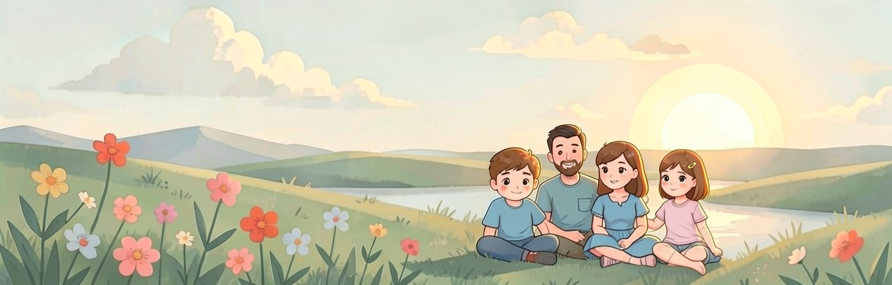

Сообщество

Основной канал – сообщество ВКонтакте: новости, обновления, канал, описания приложения «Солнечный мир», вопросы и ответы. Дубль постов – канал в MAX.
Здесь только новости проекта; личные данные детей в сообществе не публикуйте.